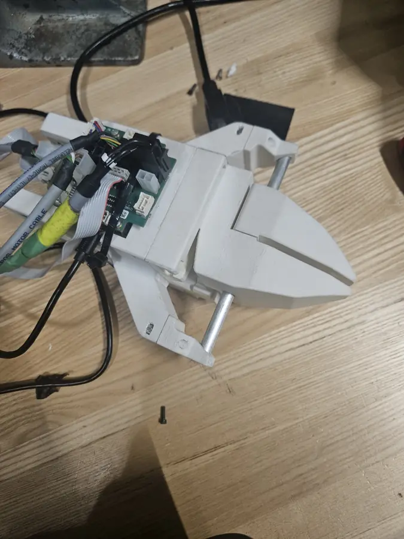

Design
A parallel-jaw gripper keeps its fingers parallel through the whole stroke, which makes contact predictable on boxes, tools and anything else with flat faces. In this design a pinion on the gearmotor output drives racks attached to the jaws, and the jaws slide on guide rods. A rack and pinion turns rotation into linear jaw travel at a constant ratio, so jaw force follows directly from motor torque and gearing, with no linkage geometry in between.
The drive is a Maxon motor with a planetary gearbox, run by a Maxon EPOS4 controller. The EPOS4 closes current, velocity and position loops on the motor, so the gripper can be sent to a position or run with a current limit. Since torque is proportional to current, the current limit directly caps grip force.
Grip test
For the first full test I chose a deliberately awkward object: a cordless drill. It's heavy, top-heavy and irregular, and the gripper holds it securely while the gripper is lifted and tilted by hand.
